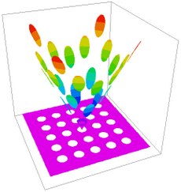

|
repeat |

  
|
|
repeat |
|
{ REPEAT.PDE
This example illustrates the use of the REPEAT statement to generate
repetitive structures, and the string facility for creating labels.
} title 'REPEAT and $string test'
Variables u
definitions a = 1 { a list of X-coordinates: } xc=array(1/3, 2/3, 3/3, 4/3, 5/3) { a list of Y-coordinates: } yc=array(1/3, 2/3, 3/3, 4/3, 5/3)
rad = 0.1 { radius of circular dots } s = 0
equations U: div(a*grad(u)) + s = 0;
boundaries region 1 start(0,0) value(u)=0 |
 |
line to (2,0) to (2,2) to (0,2) to close
region 2
a = 0.05
s = 4*magnitude(x-1,y-1)
repeat i=1 to 5 { an indexed loop on X-position }
repeat j=1 to 5 { an indexed loop on Y-position }
{ an array of circular dots at the tabulated coordinates }
start "Loop"+$i+$j (xc[i]+rad,yc[j]) {construct loop name using string conversion }
arc(center=xc[i],yc[j]) angle=360
endrepeat
endrepeat
monitors
contour(u)
plots
contour(u) painted
surface(u)
surface(s) as "Source"
repeat i=1 to 5
repeat j=1 to 5
elevation(u) on 'loop'+$i+$(j)
endrepeat
endrepeat
end
Page url: index.html?usage_repeat.html